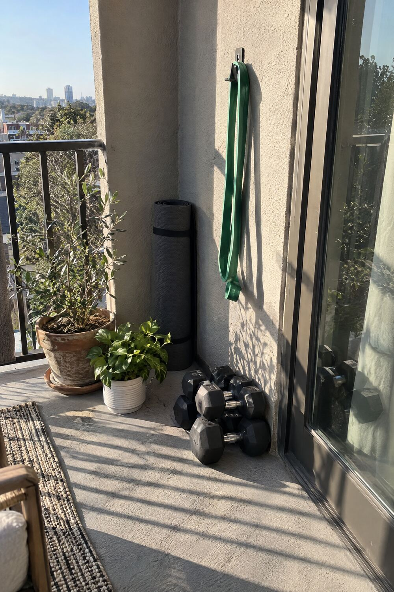
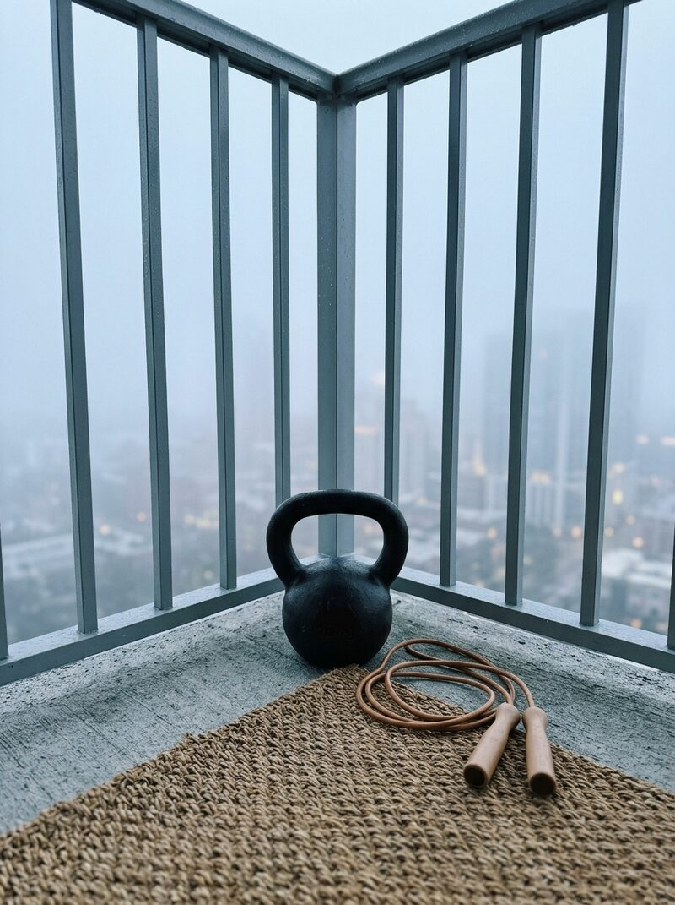
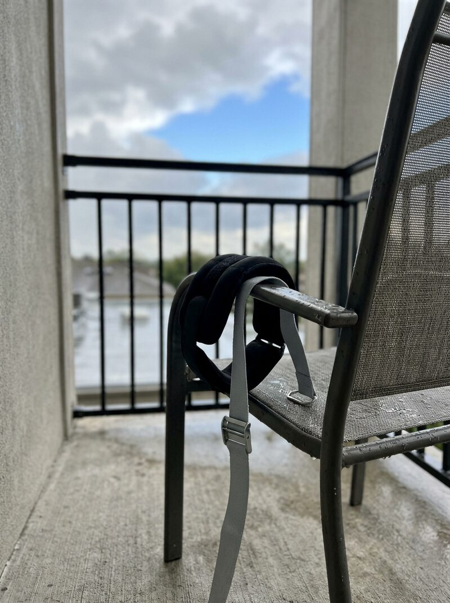
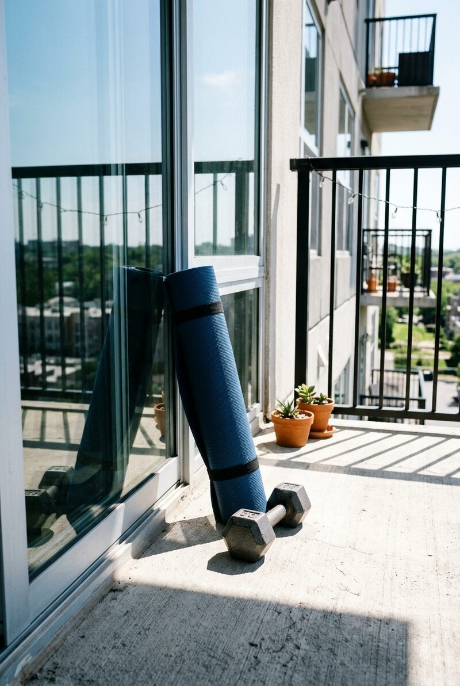
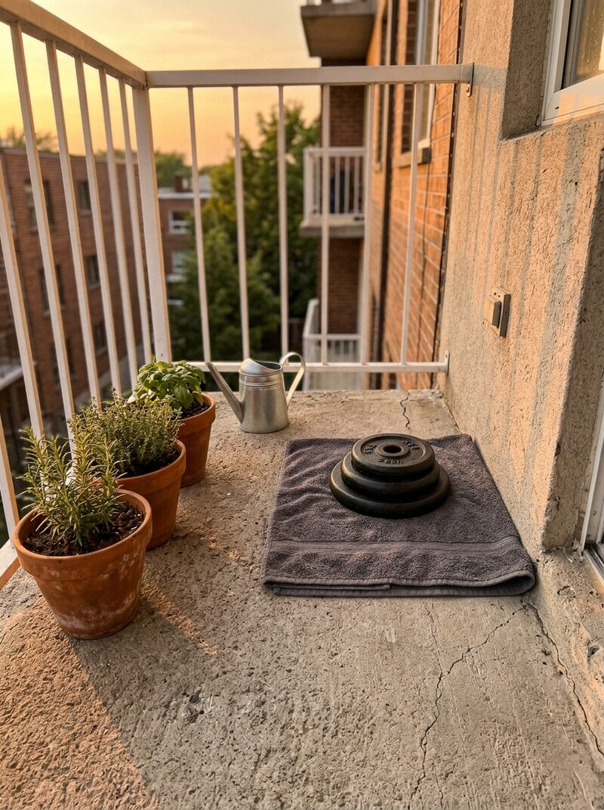
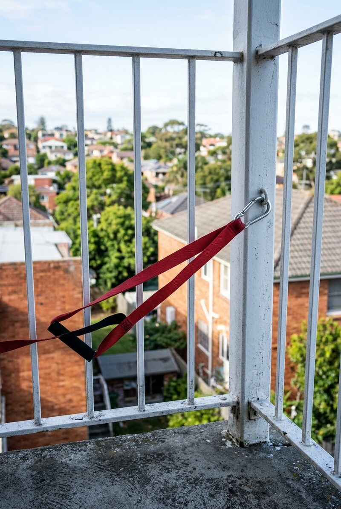
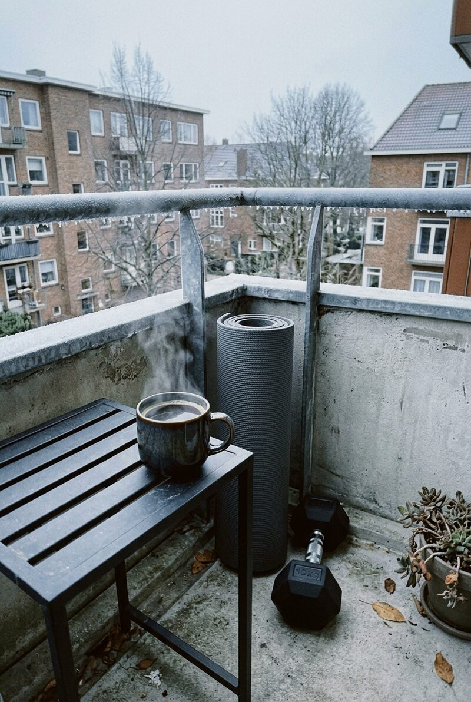

Even a narrow balcony corner is enough — a mat, a set of hand weights, a band on an adhesive hook. You get fresh air, nobody waiting on equipment, and if the weather turns, everything packs back against the wall in under a minute.

A kettlebell and jump rope in the corner of a foggy morning balcony — weather this mild doesn't need to stop anything.
A folded band and a warm drink on a small side table, lined up next to a row of succulents — it reads more like a morning ritual than a workout corner.

A padded strap looped over a balcony chair arm is the entire setup — no mat, no floor space, nothing to pack away but the band itself.

Sometimes the whole list is two items. A rolled mat and a single dumbbell cover more of a workout than people expect.

A small stack of plates sits on a folded towel beside a row of potted herbs — proof the corner can do double duty.

A resistance band clips straight to the railing post with a carabiner — no separate mount, no extra hardware.

Frost on the railing doesn't mean the setup goes inside. A mat and dumbbell stay out through winter, used in short bursts rather than long sessions.